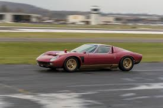
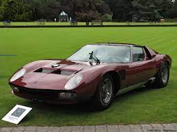
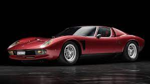
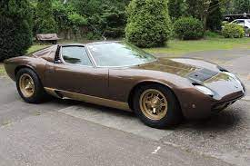

Welcome to the Miura SVJ Registry.
Miura SVJ: A Lamborghini Miura P400SV modified to perform/look like the Jota Prototype(Later known as the Millechiodi). According to the Lamborghini Registry, only 6 were ever built.
The Registry
Chassis #4892,Engine #30640,Prod. #636,Color Bianco/Bleu

Chassis #4934,Engine #30685,Prod. #678,Color Bleu Ischia Met/Pelle Bianca

Chassis #5090,Engine #30751,Prod. #756,Color Rosso Granada Met/Pelle Rossa

Chassis #5100,Engine #30749,Prod. #750,Color Luci del Bosco/Pelle Senape,Disclaimer: This is a one-off Miura with the following modifications: Rivet placement,Aluminum doors,Hexagonal central lock wheels (all the other SVJs are fitted with the classic 3 eared knock off wheel nuts),Single Jota wiper (as with #4934 and 4990),Mercedes stalk,Different suspension geometry giving lower ride height and roll centre,Oil radiator on the chassis's front part,Limited slip differential (not the case on all the SVJs),dry sump system. This car was later converted back to it's SV form by it's original owner, Harry Lansberg, who thought the car was too loud. The Following picture is the car in it's later SV form.
